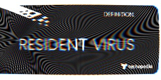

|  |
Resident VirusResident Virus is one of the most common types of malware, it conceals its presence by hiding and storing itself within the computer’s memory. Depending on how the virus has been programmed it can even attach its replication module to the antivirus and infect each and every file scanned by it. When the replication module has been added to memory, it will activate whenever the system operates a specific function. |
|---|
About Resident VirusesWhat can a Resident Virus do and how does it work?
|
 |
|---|
Sanity ChecksHow does one avoid resident Viruses?
The recommended and more efficient method involves
installing an anti-virus with in-depth scanning capabilities.
|
|---|
Resident Virus |
Edoardo Salvioni |
+41 (0) 79 812 6997 |
|---|